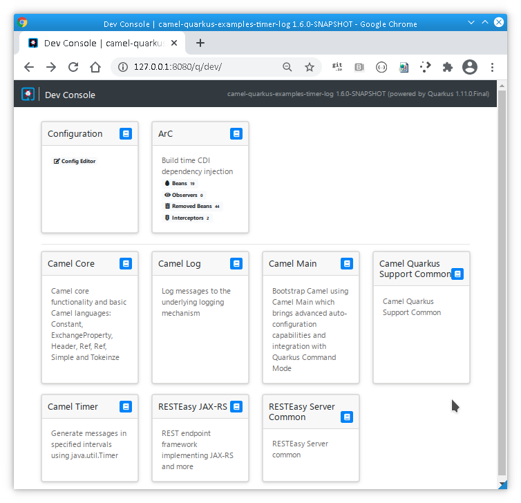

Original image by Toby Hudson CC BY-SA 3.0 via Wikipedia
{kind=link}
We are pleased to announce the release 1.6.0 of Camel Quarkus! Here are the highlights.
Java 11 required
Having deprecated Java 8 long time ago and following the same requirement by Quarkus, Camel Quarkus now requires Java 11+.
Support for more Camel components
Camel Quarkus brings support for three new Camel components:
Redis (JVM only)
Components newly supported in native mode:
Quarkus 1.11.0.Final
Camel Quarkus 1.6.0 is based on Quarkus 1.11.0.Final which brings a couple of interesting innovations:
Dev Console
You certainly know the famous Quarkus dev mode, in which Quarkus tooling is watching your workspace and recompiling your application whenever you change something so that you can interact with your up-to-date running app nearly instantly.
Quarkus 1.11.0.Final improves the development experience further through the Quarkus Dev Console. It is a UI available at http://localhost:8080/q/dev when you run your application in dev mode via
$ mvn clean compile quarkus:devNote that the Dev Console currently works only if you have
io.quarkus:quarkus-vertx-http dependency in your pom.xml.
The Dev Console allows to quickly visualise all the extensions currently loaded, see their status and go directly to their documentation.
This is what it looks like for a simple Camel Quarkus application:

More details are available in Quarkus Dev Console guide.
More in Quarkus 1.11.0.Final
Check the full Quarkus 1.11.0.Final announcement.
Full Changelog of Camel Quarkus 1.6.0
Fixed issues: https://github.com/apache/camel-quarkus/milestone/10?closed=1
All commits: https://github.com/apache/camel-quarkus/compare/1.5.0...1.6.0
Known issue
Camel FOP does not work in native mode with GraalVM 20.3.0. The users are advised to use GraalVM 20.3.1 or Mandrell GraalVM 20.3.0.
What’s next?
Camel Quarkus 1.7.0 should appear within a couple of weeks, shortly after Quarkus 1.12 or Camel 3.8, whichever comes first.
There is still a lot of Camel components to port to Quarkus. Please upvote your favorites, or even better contribute!